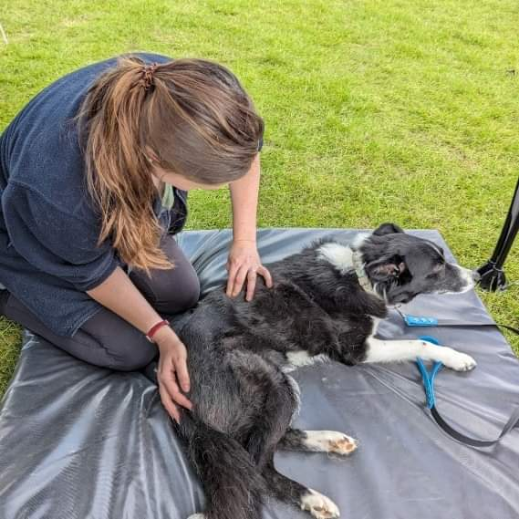

<div class="container">
    <section class="content-card what-is">
        <div class="what-is-hero">
            <div>
                <h1>What is Canine Massage?</h1>
                <p>Canine massage therapy &amp; rehabilitation can help to improve your dog’s mobility,
                    recovery from injury and performance. Massage techniques are used to reduce muscular
                    pain and inflammation and promote relaxation. Targeted exercise plans and lifestyle
                    changes can be recommended to support your dog.</p>
            </div>
            <div class="image what-is-image">
                
            </div>
        </div>
        <div class="what-is-grid">
            <div class="what-is-panel">
                <h2>When Massage Can Help</h2>
                <p>Massage can benefit all dogs but may be especially helpful in supporting the following conditions:</p>
                <ul>
                    <li>Osteoarthritis</li>
                    <li>Hip &amp; Elbow dysplasia</li>
                    <li>Cruciate injuries</li>
                    <li>Spondylitis</li>
                    <li>Muscular injuries</li>
                    <li>Compensatory issues</li>
                    <li>Chronic pain</li>
                    <li>Pre and post event massage for working and sporting dogs</li>
                    <li>Anxious dogs</li>
                </ul>
            </div>
            <div class="what-is-panel">
                <h2>Signs to Look For</h2>
                <p>If you have noticed any of the following in your dog, massage may be beneficial:</p>
                <ul>
                    <li>Lameness or limping</li>
                    <li>Yelping or crying when touched</li>
                    <li>Reluctance to be stroked or groomed</li>
                    <li>Changes to gait</li>
                    <li>Difficulty going up or down the stairs, or jumping on and off the sofa, into or out of the car</li>
                    <li>Performance changes in working or sporting dogs</li>
                    <li>Increase in anxiety or changes in behaviour</li>
                    <li>Nibbling or chewing paws or limbs</li>
                    <li>Reluctant to go for walks or walking more slowly</li>
                </ul>
            </div>
        </div>
        <p class="what-is-note">Canine massage therapy is a complementary therapy and should be used alongside veterinary advice.</p>
    </section>
</div>
